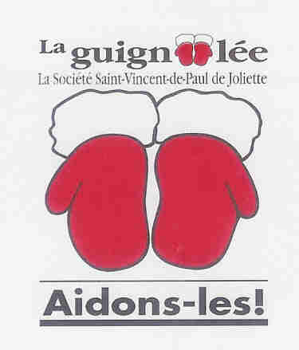

La semaine de la SSVP a lieu à chaque année en septembre depuis 2009.
Tout au long de l'année nos bénévoles procurent de l'aide alimentaire aux démunis du Grand Joliette. L'argent nécessaire pour émettre des bons d'épicerie provient de la vente de vêtements, de meubles et de bibelots. Tous les profits de la vente de ces articles sont redistribués sous forme d'aide.
Lors de la rentrée scolaire la SSVP de Joliette collabore pour contrer le décrochage scolaire en offrant des articles scolaires, des livres et des cahiers aux élèves de moins de 18 ans. C'est au parent d'en faire la demande autour du 20 août de chaque année.
 Durant la période des Fêtes nous remettons des paniers de Noël aux gens dans le besoin qui en font la demande. Ces dons sous formes de denrées ou de bons d'épicerie sont rendus possibles grâce aux montants recueillis par la Société St-Vincent de Paul de Joliette lors de la guignolée.
Consultez le calendrier de la Guignolée de la SSVP Joliette 2017 !
Merci de votre soutien!